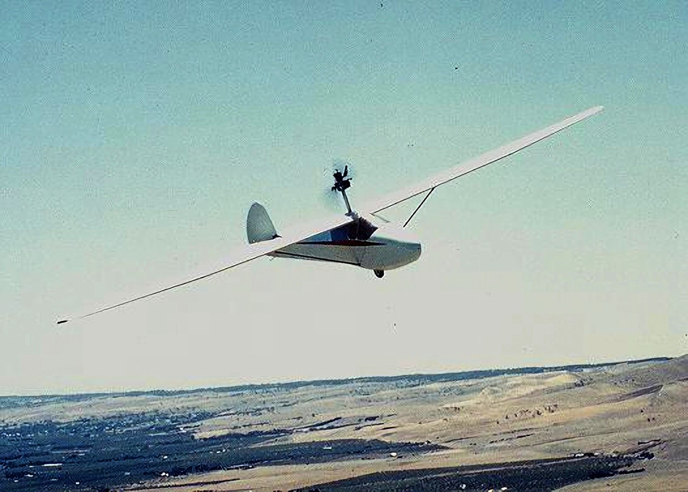

NOTE: THIS WEBSITE IS ONLY FOR TESTING
AND WILL BE HOSTED ELSEWHERE ONCE THE TESTS ARE COMPLETED.

The Joey was designed and built by Keith Jarvis in Adelaide. He went on to build three versions of the glider.
The third was fitted with a pylon mounted, converted 160cc Victa motor mower engine.
The "Joey Gliders" page has images and videos showing the evolution of the design and significant events.
A complete album the "History of the Gliding years"
contains 15 pages with more than 80 photos and details.
Keith's son Ian prepared a document with recollections and stories
as well as more detail of the many aircraft that Keith built or restored.
In February 2026, the Joey Glider was donated to
the Australian Gliding Museum at Bacchus Marsh in Victoria.
Pages complied by Lynn Jarvis, 2026.